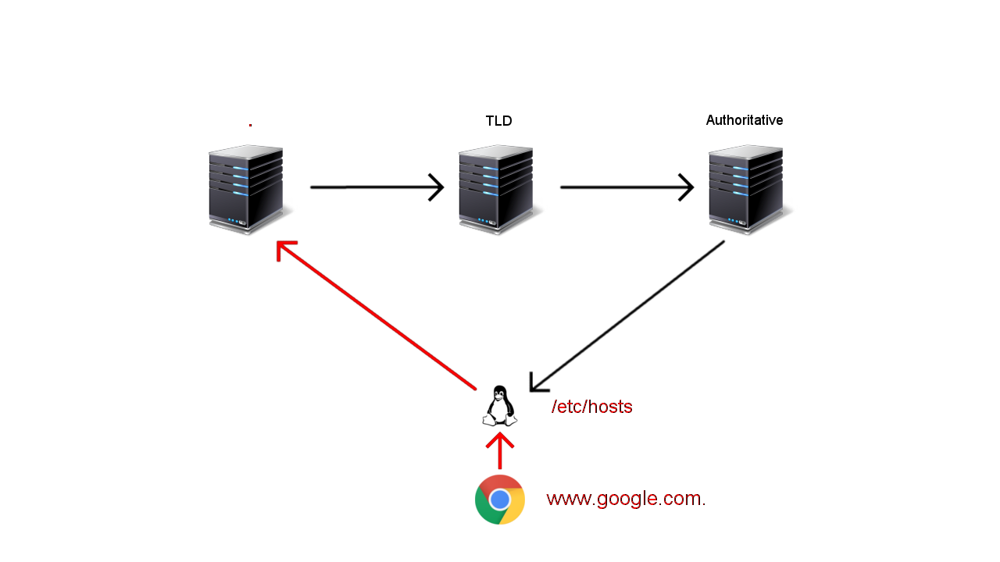

name: inverse layout: true class: center, middle, inverse --- template: inverse # DNS Deep Dive [ @tkxs ] --- layout: false ## Overview .left-column[ ### DNS ] .right-column[ Domain Name System * Address book of the internet ] -- .right-column[ * Translate `www.google.gom` to `X.X.X.X` ] -- .right-column[ * Distributed storage system for Resource Records (RR) ] --- ## Overview .left-column[ ### DNS ### RR ] .right-column[ * Each record includes a label, class, type, and data ] -- .right-column[ ``` Label Class Type Data @ IN A 34.198.250.168 ``` ] -- .right-column[ * These records describe the characteristics of a zone (domain) * The label of an RR is a symbolic domain name used when accessing an Internet resource * The class is either IN, CH, HS, or CS; the class of most RRs is IN, which means the Internet system * TTL (Time-to-Live) ] -- .right-column[ * `tcpdump udp port 53` ] --- ## The Lookup .left-column[ ### Browser ] .right-column[ ] -- .right-column[ * `chrome://net-internals/#dns` ] --- ## The Lookup .left-column[ ### Browser ### OS ] .right-column[ <img src="assets/images/dns_overview/1.png" width="640" height="360"> ] --- ## The Lookup .left-column[ ### Browser ### OS ] .right-column[ ] --- ## The Lookup .left-column[ ### Browser ### OS ### Root ] .right-column[ ] --- ## The Lookup .left-column[ ### Browser ### OS ### Root ### TLD ] .right-column[ <img src="assets/images/dns_overview/3.png" width="640" height="360"> ] --- ## The Lookup .left-column[ ### Browser ### OS ### Root ### TLD ### Authoritative ] .right-column[ ] --- ## The Lookup .left-column[ ### Browser ### OS ### Root ### TLD ### Authoritative ] .right-column[ ] --- ## The Lookup .left-column[ ### Browser ### OS ### Root ### TLD ### Authoritative ### Example ] .right-column[ ] --- ## The Lookup .left-column[ ### Browser ### OS ### Root ### TLD ### Authoritative ### Example ] .right-column[ ] --- ## The Lookup .left-column[ ### Browser ### OS ### Root ### TLD ### Authoritative ### Example ] .right-column[ <img src="assets/images/dns_overview/8.png" width="640" height="360"> ] --- ## The Lookup .left-column[ ### Browser ### OS ### Root ### TLD ### Authoritative ### Example ] .right-column[ ] --- ## The Lookup .left-column[ ### Browser ### OS ### Root ### TLD ### Authoritative ### Example ] .right-column[  ] --- ## The Lookup .left-column[ ### Browser ### OS ### Root ### TLD ### Authoritative ### Example ] .right-column[ ] --- ## The Lookup .left-column[ ### Browser ### OS ### Root ### TLD ### Authoritative ### Example ] .right-column[ ] --- ## The Lookup .left-column[ ### Browser ### OS ### Root ### TLD ### Authoritative ### Example ] .right-column[ ] --- ## The Lookup .left-column[ ### Browser ### OS ### Root ### TLD ### Authoritative ### Example ] .right-column[ ``` dig ruby-lang.org +trace ``` ] --- <img src="assets/images/dns_tree.gif" width="800" height="500"> --- ## Resource Records .left-column[ ### SOA ] .right-column[ * Start of Authority (SOA) * Every domain has one * Contains zone information ] -- .right-column[ ``` @ IN SOA ns1.example.com. admin.example.com. ( 2017052101 ; Serial 360 ; Refresh [1h] 600 ; Retry [10m] 1209600 ; Expire [1d] 3600 ; Negative Cache TTL [1h] ) ``` ] -- .right-column[ - `dig tkxs.com +nssearch` ] --- ## Resource Records .left-column[ ### SOA ### A / AAAA ] .right-column[ * Map a hostname to an IP address * A record returns a 32-bit IPv4 Address * AAAA record returns a 128-bit IPv6 Address ] -- .right-column[ ``` @ IN A X.X.X.X @ IN AAAA 2001:0db8:85a3:0000:0000:8a2e:0370:7334 ``` ] --- ## Resource Records .left-column[ ### SOA ### A / AAAA ### CNAME / Alias ] .right-column[ * Canonical name record * Must be pointed to another domain name * Usually applied to sub-domains ] -- .right-column[ * Alias records provide CNAME-like behavior for root domains ] -- .right-column[ ``` www IN CNAME example.com. @ IN ALIAS myapp.heroku.com ``` ] --- ## Resource Records .left-column[ ### SOA ### A / AAAA ### CNAME / Alias ### MX ] .right-column[ * Maps a domain name to a list of message transfer agents for that domain ] -- .right-column[ ``` @ IN MX 1 ASPMX.L.GOOGLE.COM. @ IN MX 5 ALT1.ASPMX.L.GOOGLE.COM. @ IN MX 5 ALT2.ASPMX.L.GOOGLE.COM. @ IN MX 10 ALT3.ASPMX.L.GOOGLE.COM. @ IN MX 10 ALT4.ASPMX.L.GOOGLE.COM. ``` ] --- ## Resource Records .left-column[ ### SOA ### A / AAAA ### CNAME / Alias ### MX ### NS ] .right-column[ * Delegates a DNS zone to use the given authoritative name servers * glue records ] --- ## Resource Records .left-column[ ### SOA ### A / AAAA ### CNAME / Alias ### MX ### NS ] .right-column[ ] --- ## Resource Records .left-column[ ### SOA ### A / AAAA ### CNAME / Alias ### MX ### NS ### Other ] .right-column[ * `TXT` : Human readable text DNS entries, more often has machine-readable data. * `CAA` : Constrain acceptable CA's for a domain * `PTR` : Return .arpa CNAME - primarily for reverse DNS lookups * `SRV` : Map host and port number to a target * `LOC` : Specifies a geographical location associated with a domain name ] -- .right-column[ * There are 38 Resource Record Types ] -- .right-column[ https://en.wikipedia.org/wiki/List_of_DNS_record_types ] --- ## Exploits .left-column[ ### Cache Poisoning ] .right-column[ * Also refered to as DNS spoofing * Achieved by placing an incorrect entry into DNS cache * Great Firewall ] --- ## Exploits .left-column[ ### Cache Poisoning ### DNS Amplification ] .right-column[ * Reflection based DDoS * Spoof lookup requests with a targeted source * Response > Query * 64 bytes -> 3,223 bytes ] --- ## Exploits .left-column[ ### Cache Poisoning ### DNS Amplification ### DNSSEC ] .right-column[ * Set of extensions to DNS * Provides origin authentication of DNS data * Data integrity ] --- ## Nginx